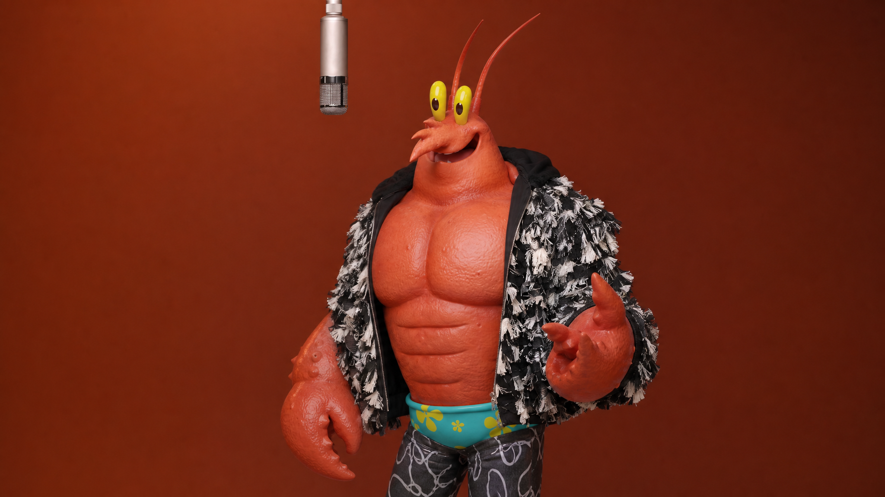
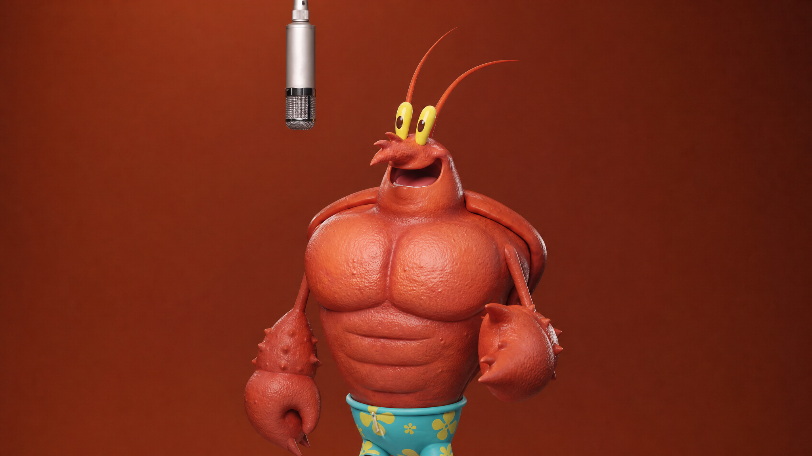
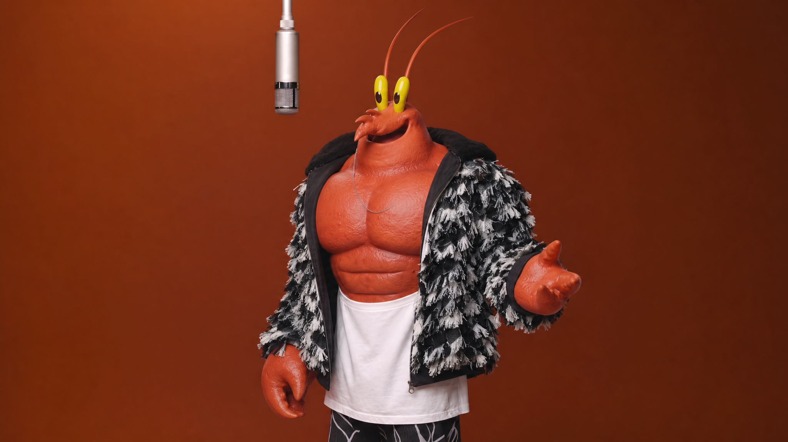
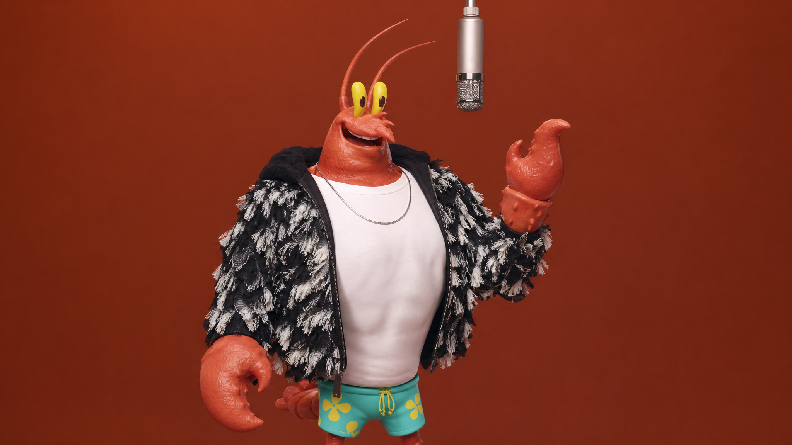
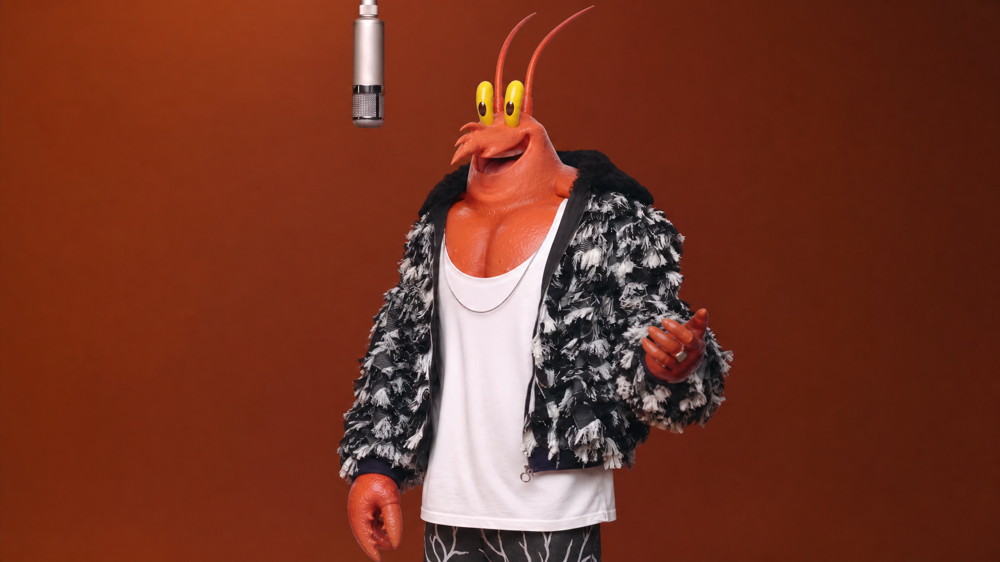
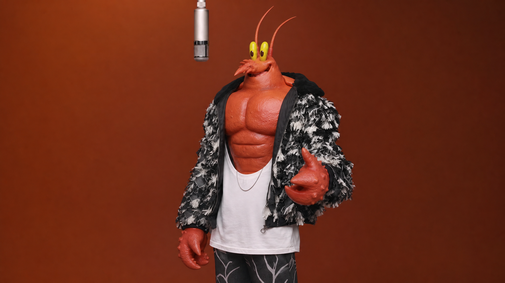
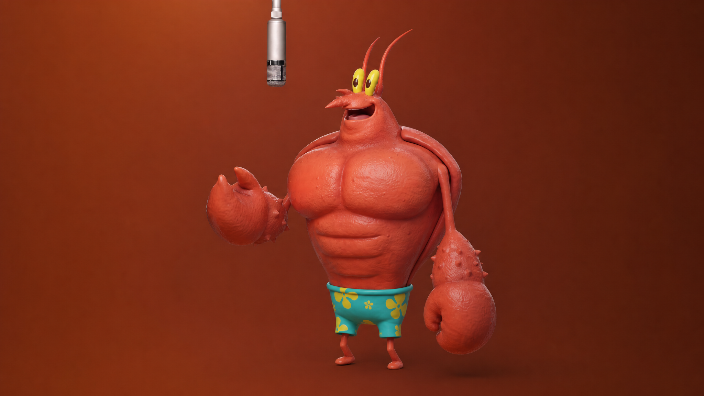

Connecting AI editing with creative exploration.
Business Context
Prompt-free AI video generation — fast, simple, viral.
Emerging User Needs
0–1 Challenge
As the first hire and in-house designer, I faced ambiguity on two fronts — defining what an AI-native editing experience should be, and building the design infrastructure to iterate fast enough to find out.
Design Infrastructure
Initial Smart Edit MVP
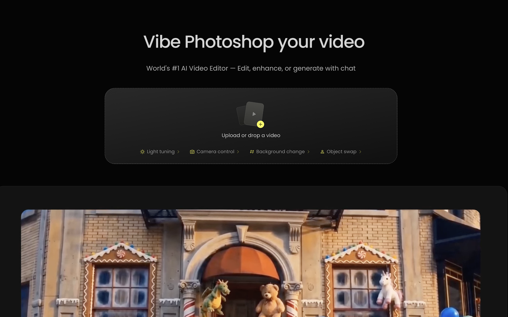
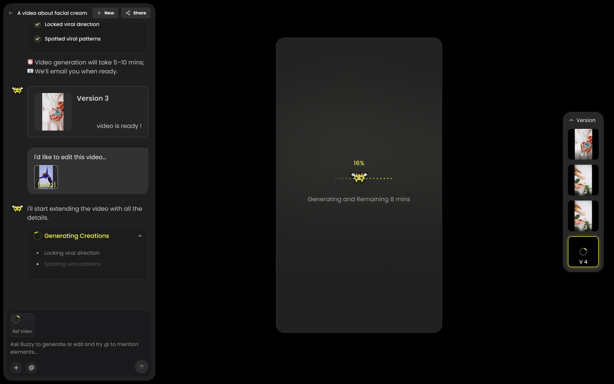
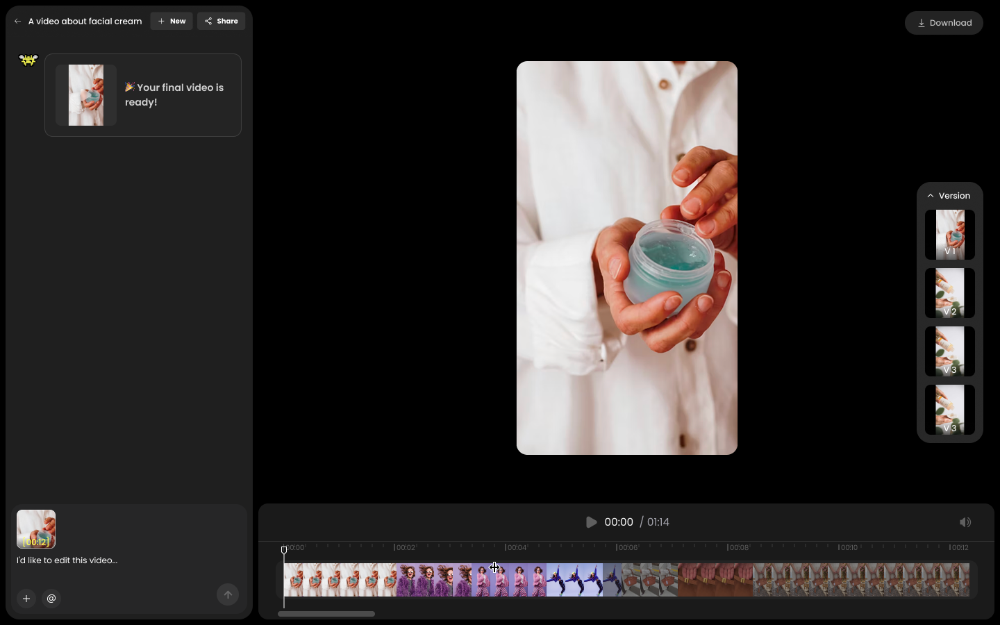
User Research & Turning Point







Product Pivot
Decision 1 · Entry Points
Before
After
Decision 2 · Spatial Workspace
Before
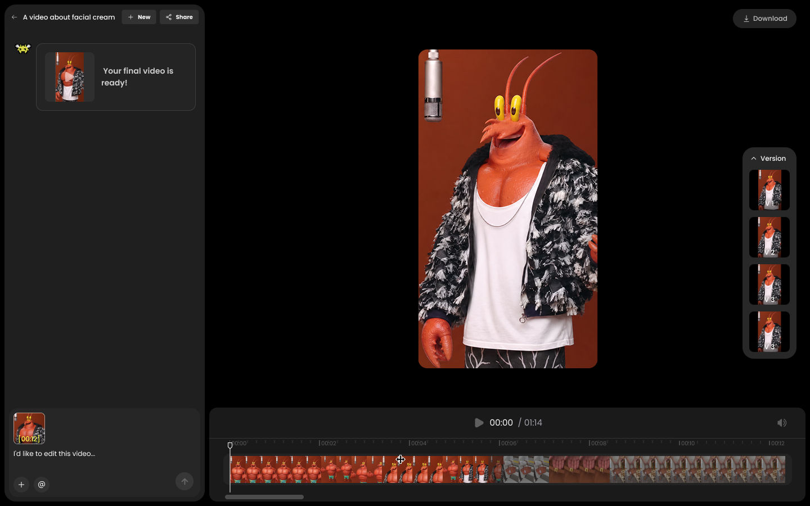
After
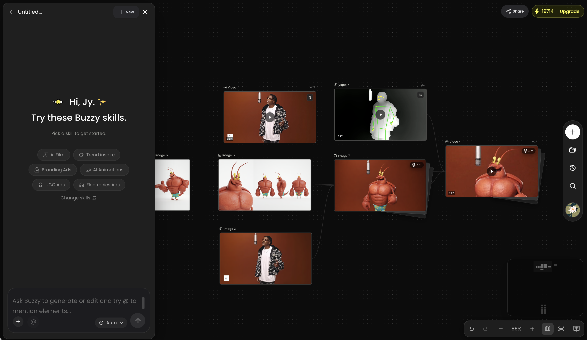
Launch & Results
X/Twitter Acquisition Funnel · 6M
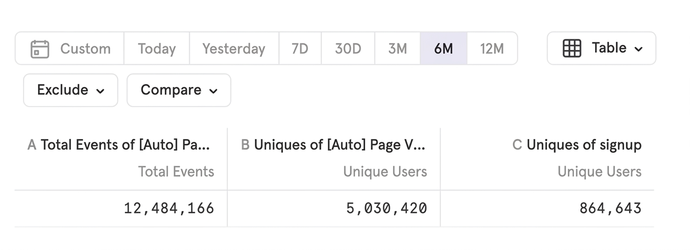
Feature Adoption & Engagement Funnel
Post-launch Iteration · Decision 3
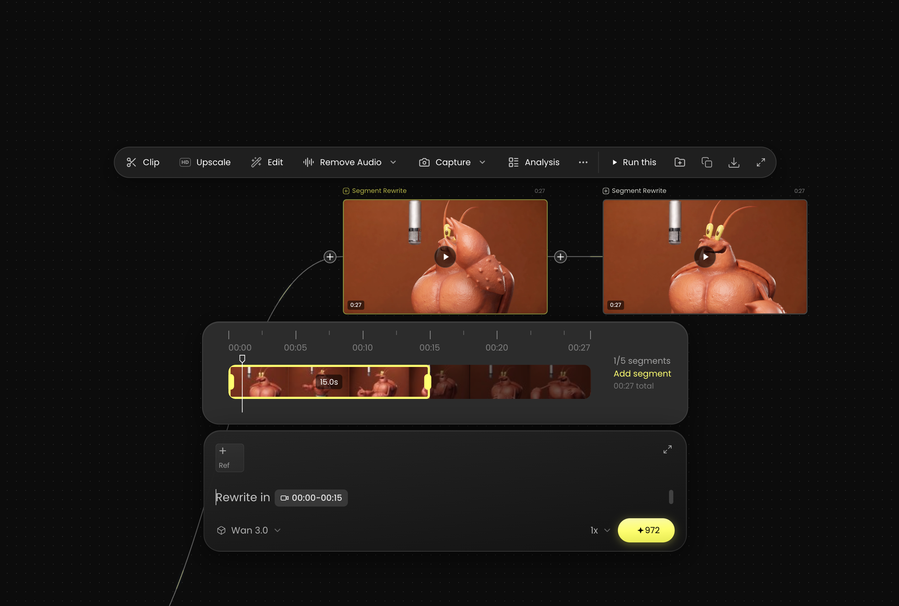
Future Direction